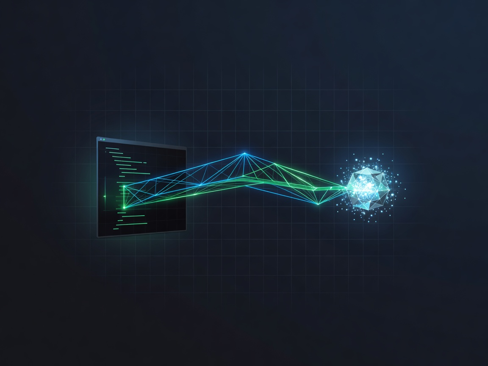
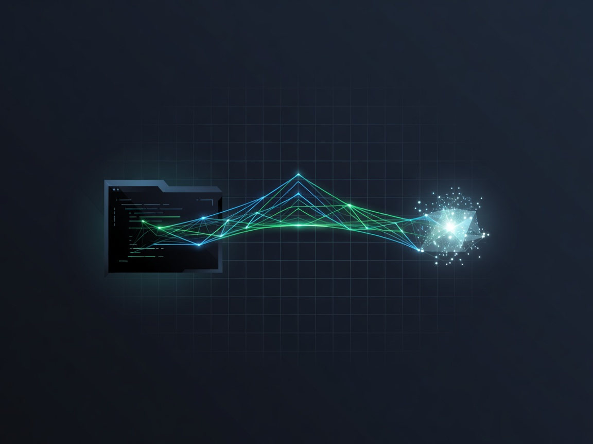
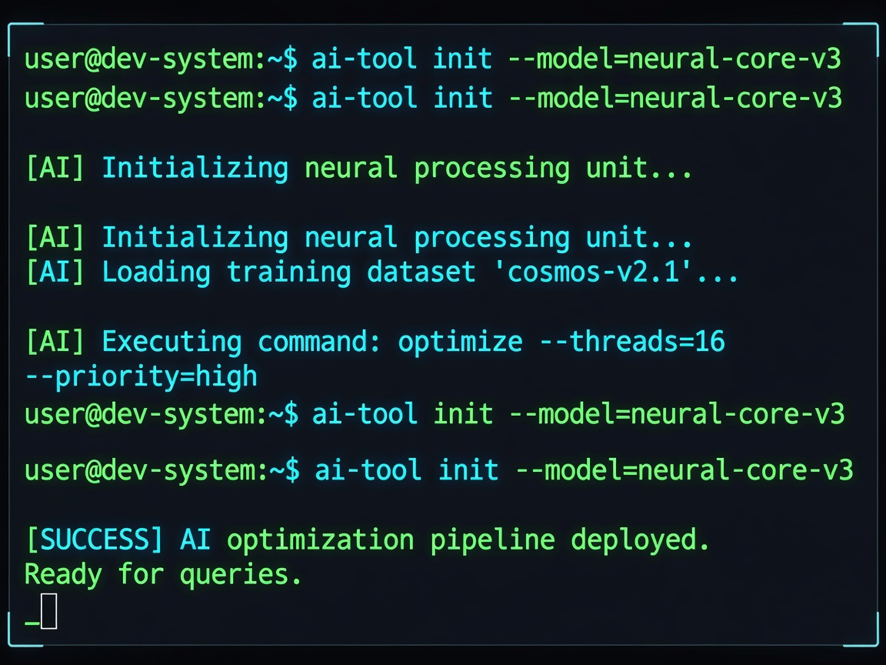
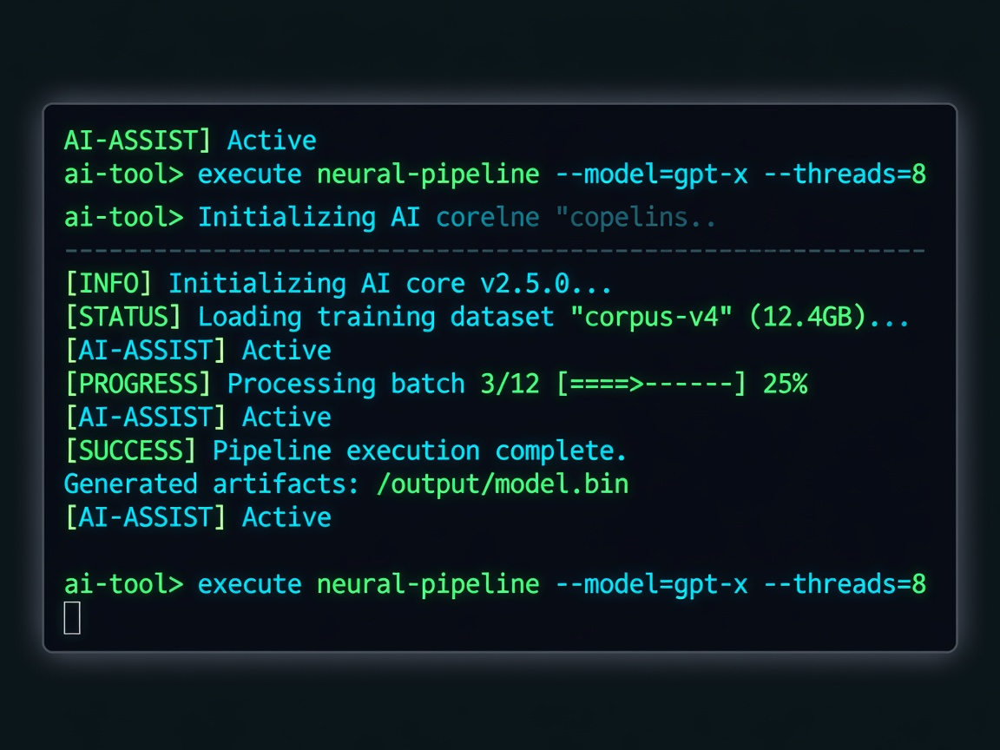
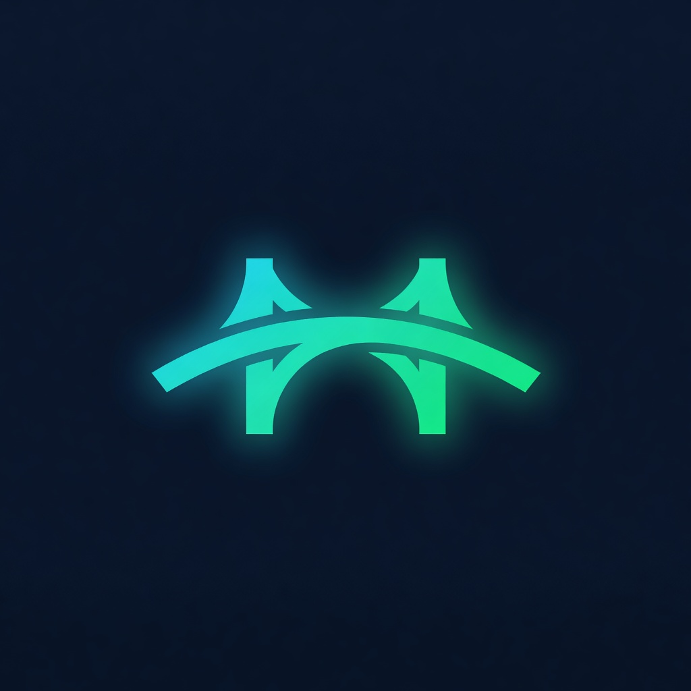

cover-1.jpg — Primary product cover (4:3, 108KB)assets/branding/ls-assets/cover-1.jpg

cover-2.jpg — Alternate cover (4:3, 96KB)assets/branding/ls-assets/cover-2.jpg

terminal-1.jpg — Feature: terminal tools (4:3, 271KB)assets/branding/ls-assets/terminal-1.jpg

terminal-2.jpg — Feature: terminal alt (4:3, 229KB)assets/branding/ls-assets/terminal-2.jpg

thumb-1.jpg — Thumbnail (1:1, 72KB)assets/branding/ls-assets/thumb-1.jpg
thumb-2.jpg — Thumbnail alt (1:1, 57KB)assets/branding/ls-assets/thumb-2.jpg
xBridge Pro — Grok Inside Claude CodexBridge MCP brings Grok's 19+ AI tools (chat, web search, X search, image & video generation) into Claude Code via the Model Context Protocol. You bring your own xAI API key — we provide the bridge. No markup on AI usage. Free tier available, Pro unlocks unlimited calls.xBridge MCP is the cleanest way to use xAI's Grok models inside Claude Code. Instead of switching tabs between Claude and Grok, you get 19+ native MCP tools — chat, web search, X/Twitter search, image generation, video generation, session management, and multi-step research chains — all from your terminal.
Built for developers who want speed. 2-minute setup via pip or Docker. Claude Code can configure itself — just paste the MCP config. Zero telemetry, zero proxies, your API key stays on your machine. MIT licensed open source — inspect every line.
Features:
• All 19+ Grok tools available as native Claude Code tools
• Web & X/Twitter search with domain/handle filtering and date ranges
• Image & video generation with multiple models and aspect ratios
• Persistent conversation sessions across restarts
• Multi-step research chains — search, summarize, debug in one call
• 2M token context window with grok-4.20 models
• BYOK — your xAI key, your machine, no middleman
• 2-minute setup: pip install or Docker, paste config, done| Variant Name | Price | Billing | Details |
|---|---|---|---|
| Pro | €4.00 | Monthly | Unlimited calls, all tools, priority support, early access |
| Founder (lifetime lock) | €2.00 | Monthly | Same as Pro — price locked forever. Limit: 50 seats max |
URL: https://mcp.xbridgemcp.com/webhooks/ls
Events: subscription_created, subscription_updated, subscription_cancelled
→ Copy signing secret → add to VPS .env as LS_SIGNING_SECRETcurl -fsSL https://tailscale.com/install.sh | shsudo tailscale up --advertise-routes=76.13.48.186/32 --sshThis makes the VPS join your Tailnet. The --ssh flag enables Tailscale SSH (no more SSH keys). Approve the device in the admin console at login.tailscale.com/admin/machines.
sudo tailscale serve --bg 8000Now your backend is at https://[vps-hostname].tailnet-name.ts.net — accessible only to your Tailnet devices. No public exposure, no DNS needed.
sudo tailscale funnel --bg 8000This gives you a public HTTPS URL. Useful for webhooks (LemonSqueezy needs a public endpoint). Replaces the nginx/Traefik SSL setup if you want simplicity.
# macOS
brew install tailscale && sudo tailscale up
# Linux
curl -fsSL https://tailscale.com/install.sh | sh && sudo tailscale up
# Windows
winget install tailscale
Once connected, access VPS services via Tailscale IP (100.x.x.x) or MagicDNS hostname.
| Command | What it does |
|---|---|
tailscale status | List all devices on your Tailnet |
tailscale ip | Show this machine's Tailscale IP |
sudo tailscale serve status | Show active Serve/Funnel configs |
sudo tailscale funnel status | Show Funnel status |
sudo tailscale up --reset | Reset and re-authenticate |
tailscale cert [hostname] | Get TLS cert for your .ts.net domain |
xBridge MCP · github.com/hrco/xbridge-mcp · xbridgemcp.com